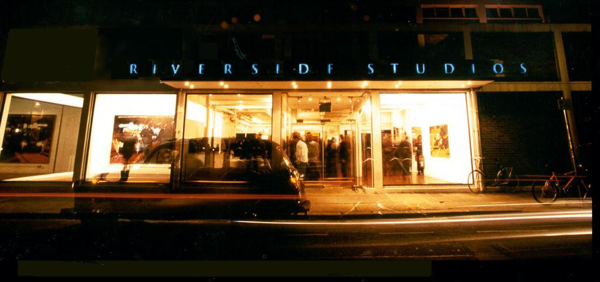
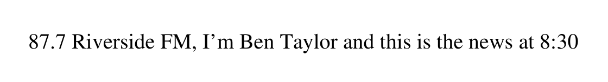
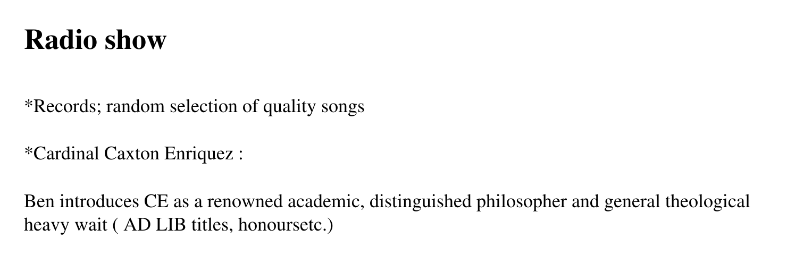
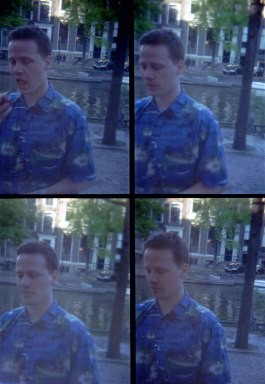
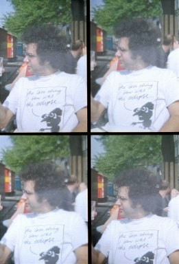

Riverside Studios · Hammersmith · July 2002
Riverside FM
Jax, Rufus, and I got another go. We sent John out into Hammersmith in the middle of the night and told him what to say to strangers.



The Hammersmith run
I’d remembered Riverside as another 107.9. Fortunately I wrote the frequency at the top of my breakfast script, and the floppy disk still reads.


Riverside Studios and the Women’s Radio Group ran the station on a short-term restricted service licence. It went live in west London on Friday 12 July at 6 pm. You could listen on 87.7 FM or on the web. It ran for three weeks. It was a local arts and community station in a working arts centre.
Riverside’s original website · Robin Andrew’s launch-day studio photograph · The daytime team at the launch, also by Robin Andrew · The July 2002 announcement


John goes outside
I remember the 1–3 am slot with Rufus and Jax. Sending John out to speak to whoever he could find was a considerable technical advance on dialling the Oxford phone box. This time there was someone out there who had to answer us.
The document actually called dead air.doc on the Riverside floppy starts with a ‘random selection of quality songs’. Jax’s notes propose B-sides, dedications, childhood nightmares, and a visit from Cardinal Caxton Enriquez. My job is to ask the distinguished philosopher difficult questions. His job is to keep putting records on instead. One of his research questions is ‘Do pigs cry?’


The disk also has seven of our old Oxford production files, right down to the copy of the first Sunday running order. We had evidently come prepared to repeat ourselves. The printed Riverside timetable gives the weekday late hours over to music without naming the presenters. The 1–3 am slot is my recollection.
The breakfast shift
I remember doing the arts reporting on the seven o’clock breakfast show, as well as my day job working for the Mayor. The floppy has four files of news copy, dated 16, 17, 18, and 22 July. They do rather widen the job description. My 8.30 bulletin leads on the national council workers’ strike, the pay offer, and what would happen to libraries, schools, and leisure centres that day. (I had – rather preciously – chosen to join the NUJ so was not scabbing.)
Zoe Mack and Lisa Leong hosted the weekday breakfast show. Seven to eight was the ‘Wake Up Call’, followed by ‘Working Breakfast’. And there’s another job I’d left out altogether. The station’s own Saturday schedule lists ‘Worldwide Review with Ben Taylor and guests’, 10–11 am.
I enjoyed those times. There was a lot to be said for being ‘wacky’ when it also meant you could bring in people whose music and poetry you loved.
Having done the graveyard shift, I used to get up and cycle back over for the morning reviews. Riverside was also where I saw Kusturica films and a Top of the Pops filming.
Riverside’s breakfast announcement · The original timetable · My account of cycling back for the reviews
Worldwide Review
Jasper Joffe roped me into the Worldwide Review website. These days you’ll know him from Joffe Books. Back then he was a struggling artist with big ideas. We did a discussion show on Riverside, loosely modelled, I think, on Newsnight Review – the BBC Two programme where a panel got stuck into the week’s arts and culture.




Lomo photographs from our Worldwide Review website files, 2001.
The 2002 website’s ‘curators’ page has us down as ‘Jasper Joffe / Artist, living in London. Writing his first book’ and ‘Ben Taylor / Looking for a new job.’ The original credits.
The old Worldwide Review website has a better memory for that Saturday show than I do. Tony Louki wrote up the first one the very next day. I opened with a tune from a cross-Channel ferry advert. Emma was on the desk. Julie Hill, Russell Pask, Donald McDonald, Tony, and Josh Ryan Collins were in the temporary studio. Tony spoke about Cyprus, ahead of the anniversary of the 1974 coup.
A week later the discussion was about globalisation. Monisha Saldanha put her contribution up afterwards, on the curious enthusiasm of wealthy countries for free trade while keeping their own quotas. There’s even a piece of arts broadcasting you can still read. Stephen Nelson posted his script about the damaged Margaret Thatcher statue at the Guildhall and the reported fate of Marc Quinn’s frozen-blood self-portrait. The archive preserves the words. The link that used to play Riverside’s live stream has gone quiet.
Worldwide Review in summer 2002 · Jasper’s art · Joffe Books · Newsnight Review
Tony Louki on the first broadcast · Monisha Saldanha on the 20 July debate · Stephen Nelson’s ‘Heads you win’ transcript